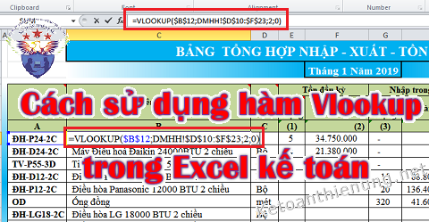
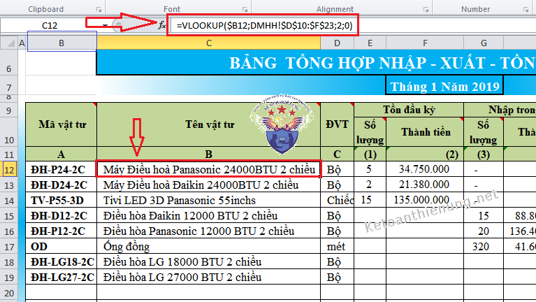
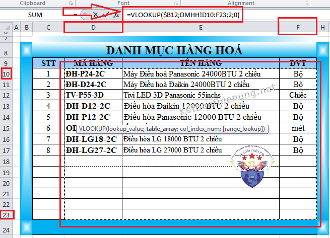

Hướng dẫn sử dụng hàm Vlookup trong Excel kế toán; Tác dụng của hàm Vlookup khi làm sổ sách kế toán trên Excel, cú pháp thực hiện hàm Vlookup.

---------------------------------------------------------------------------------------
- Tìm đơn giá Xuất kho từ bên Bảng Nhập Xuất Tồn về Phiếu Xuất kho.
- Tìm Mã TK, Tên TK từ Danh mục tài khoản về bảng CĐPS, về Sổ 131, 331…
- Tìm Mã hàng hoá, tên hàng hoá từ Danh mục hàng hoá về Bảng Nhập Xuất Tồn
- TÌm số dư của đầu tháng N căn cứ vao cột số dư của tháng N-1
- Tìm số Khấu hao (Phân bổ) luỹ kế từ kỳ trước, căn cứ vào Giá trị khấu hao (phân bổ) luỹ kế (của bảng 242, 214)
- Và các bảng khác liên quan….
----------------------------------------------------------------
- Hàm Vlookup là hàm tìm kiếm theo một điều kiện (giá trị) đã có: ( Điều kiện đã có gọi là "Giá trị để tìm kiếm".
Cú pháp của hàm: Hàm có 4 tham số gồm:
=Vlookup (Giá trị để tìm kiếm;Vùng dữ liệu tìm kiếm;Cột trả về giá trị tìm kiếm;0)
(Dấu chấm phẩy (;) hay dấu (,) là phụ thuộc vào từng máy tính )
- Giá trị để tìm kiếm: Giá trị để tìm kiếm chỉ là một Ô và phải có Tên trong Vùng dữ liệu tìm kiếm ( Là Ô mã hàng hoá, Mã tài khoản, Mã tài sản, Mã Công Cụ dụng cụ….)
- Vùng dữ liệu tìm kiếm: “Vùng dữ liệu tìm kiếm” phải chứa tên của “ Giá trị để tìm kiếm”. (Cụ thể: là bảng dữ liệu của tháng trước hoặc dữ liệu của Sheet khác )
- Cột trả về giá trị tìm kiếm: Là số thứ tự cột, tính từ bên trái sang của vùng dữ liệu tìm kiếm (Ví dụ: =Vlookup (Giá trị để tìm kiếm;Vùng dữ liệu tìm kiếm;2;0) Là cột thứ 2 tính từ bên trái sang của vùng dữ liệu)
- Tham số “ 0”: Không thực hiện sắp xếp theo thứ tự nào.
Tại sạo phải bấm phím F4:
- Bấn F4 (1 lần): Để có gái trị tuyệt đối (tuyệt đối được hiểu là cố định cột và cố định dòng – ($cột$dòng);
Ví dụ: $E$12 – tức là cố định cột E và cố định dòng 12.
- Bấm F4 (2 lần): Để có giá trị tương đối cột và tuyệt đối dòng – được hiểu là cố định dòng thay đổi cột – (cột$dòng);
Ví dụ: E$12 – tức là cố định Dòng 12, không cố định cột E.
- Bấm F4(3 lần): Để có giá trị tương đối dòng và tuyệt đối cột – được hiểu là cố định cột thay đổi dòng – ($cột dòng) ;
Ví dụ: $E12 – tức là cố định Cột E, không cố định dòng 12.
-----------------------------------------------------------------------------------------
Sau đây Công ty Kế toán Diệu Tâm xin lấy ví dụ về cách sử dụng hàm Vlookup trong Excel khi làm kế toán, để các bạn hiểu dõ hơn:
Ví dụ: - Tìm Tên hàng hóa, vật tư của mã hàng ĐH-P24-2C từ Danh mục hàng hóa (DMHH) về Bảng Nhập Xuất Tồn:
Cú pháp =VLOOKUP($B12;DMHH!$D$10:$F$23;2;0)
+) Giá trị tìm kiếm: là Ô chữa mã hàng ĐH-P24-2C trên Bảng Nhập xuất tồn (theo ví dụ hình ảnh bên dưới là ô B12).+) Vùng dữ liệu tìm kiếm: Là Bảng Danh mục hàng hóa (DMHH) điểm bắt đầu của Vùng được tính từ dãy Ô có chứa mã hàng ĐH-P24-2C đến dãy Ô có chứa giá trị cần tìm. (theo ví dụ hình ảnh bên dưới là Vùng từ D10 đến F23)
+) Cột trả về giá trị tìm kiếm: là Cột "Tên hàng hóa" trên Bảng DMHH và được đếm từ bên trái của Vùng sang. (theo ví dụ hình ảnh bên dưới là Cột thứ 2 của Vùng tìm kiếm)
Trình tự cụ thể như sau:
- Bắt đầu: Trên Bảng Nhập xuất tồn gõ hàm =VLOOKUP(
- Tiếp đó: Khi các bạn bấm chọn vào chọn Ô B12 thì phải bấm phím F4 1 lần để cố định.
-> Cụ thể khi gõ đến =Vlookup(B12 -> Thì phải bấm phím F4 1 lần: -> Kết quả sẽ là: =VLOOKUP($B12
- Tiếp đó: Khi kéo chuột chọn vùng dữ liệu trên bảng DMHH thì phải bấm phím F4 1 lần để cố định:
-> Cụ thể khi gõ đến =VLOOKUP($B12;DMHH!D10:F23 -> Thi phải bấm phím F4 1 lần: Kết quả: =VLOOKUP($B12;DMHH!$D$10:$F$23
-> Cuối cùng các bạn gõ tiếp =VLOOKUP($B$12;DMHH!$D$10:$F$23;2;0)

Trên Bảng Danh mục hàng hóa (DMHH) kéo chuột từ D10 đến F23.

------------------------------------------------------------------------
xem thêm: Cách làm sổ sách kế toán trên Excel
__________________________________________________